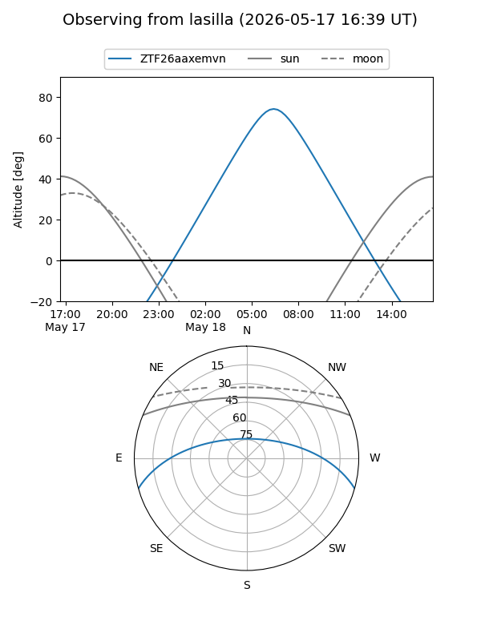
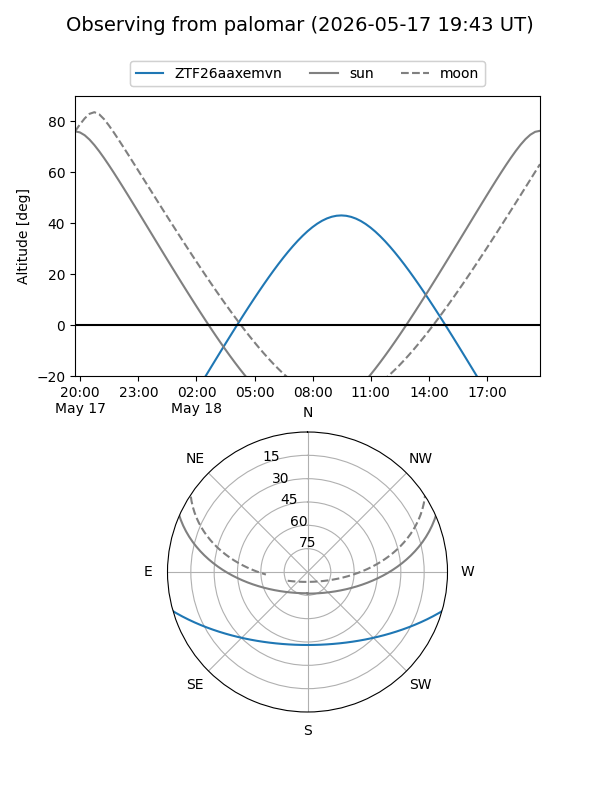

ZTF26aaxemvn
Target ZTF26aaxemvn at 2026-05-18 13:31
Aliases and brokers:
FINK: link
Lasair: link
ALeRCE: link
alt names
ZTF26aaxemvn (ztf,fink_ztf)
Coordinates:
equatorial (ra, dec) = 260.9175,-13.53473
equatorial (HMS+DMS) = 17:23:40.21,-13:32:05.02
galactic (l, b) = (10.4101,+12.50983)
Flags:
Photometry:
last ztfg=20.11
1 ztfg detections
Lightcurve
Visibility


Additional plots